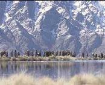

Estrenada el 18 de desembre de 2002
«- Fitxa tècnica - Cinemes - Entrevista - comentari 1
| 'LES
DUES TORRES' a la meitat de la Terra Mitjana El gran fresc èpic i fantàstic dissenyat pel neozelandès Peter Jackson segons l'influent cicle novel.lesc de Tolkien arriba a la segona entrega. Gairebé totes les coses bones que es podien dir de la primera part, La comunitat de l'anell, són vàlides per a Les dues torres. Iguala en línies generals la primera i també aventura elements suggerents per a la tercera i última. |
 |
|
El
menys interessant de l'anterior pel.lícula també es repeteix en aquesta
segona part: moments una mica discursius i passatges una mica gratuïts
en què la cà- mera puja i baixa sense gaire sentit, només per mostrar
un sentit de l'espectacle que ja està present en la mateixa dimensió
mítica de la història. De fet, encara que els tres films previstos s'estrenin en tres anys consecutius, ens trobem davant d'una única pel.lícula. Així va ser rodada i només la lògica del mercat imposa la fragmentació en tres blocs. Una crítica global de les tres parts seria un exercici molt més equitatiu. Per això Les dues torres conserva la unitat d'estil de La comunitat de l'anell, el seu gest aventurer, la ben trobada estè- tica digital, el to tràgic d'alguns dels esdeveniments que s'hi narren, la fantasia tenebrosa impulsada pels fastigosos guerrers orcs o els cavallers negres muntats a sobre de grans feres voladores, el regust de relat de cavalleries d'un futur imperfecte i, sobretot, l'èpica. INSPIRACIÓ ÈPICA Pot ser que sigui una mica menys tenebrosa que l'anterior pel.lícula, però és en la inspiració èpica on la supera. Les tres peripècies en paral.lel --la protagonitzada pel hòbbit Frodo (el dipositari de l'anell que encarna Elijah Wood) i el seu amic Sam, la dels altres dos hòbbits atrapats al bosc animat i la que va enfrontant successivament el guerrer Àragorn (Viggo Mortensen) i els seus companys nan i elf contra qualsevol mena d'orc-- convergeixen en un esplèndid passatge bèl.lic que ni tan sols un cert to new age i la fanfara musical aconsegueixen invalidar. Les dues torres també té un encomiable sentit de l'humor --l'arbre vivent que aprofita el riu desbordat per apagar les fletxes flamejants llançades pels seus enemics--, escenaris d'allò més suggestius --els aiguamolls dels espectres--, criatures fascinants --els olifants, o enormes elefants digitals-- i un personatge que val per tot el film: Gollum, la criatura viscosa de grans ulls i extremitats que es passa tot el metratge debatent-se com si fos el doctor Jekyll i Míster Hyde. Juntament amb la forma de muntar a cavall que té el ros elf, el més aplaudit per la joiosa platea. |
|